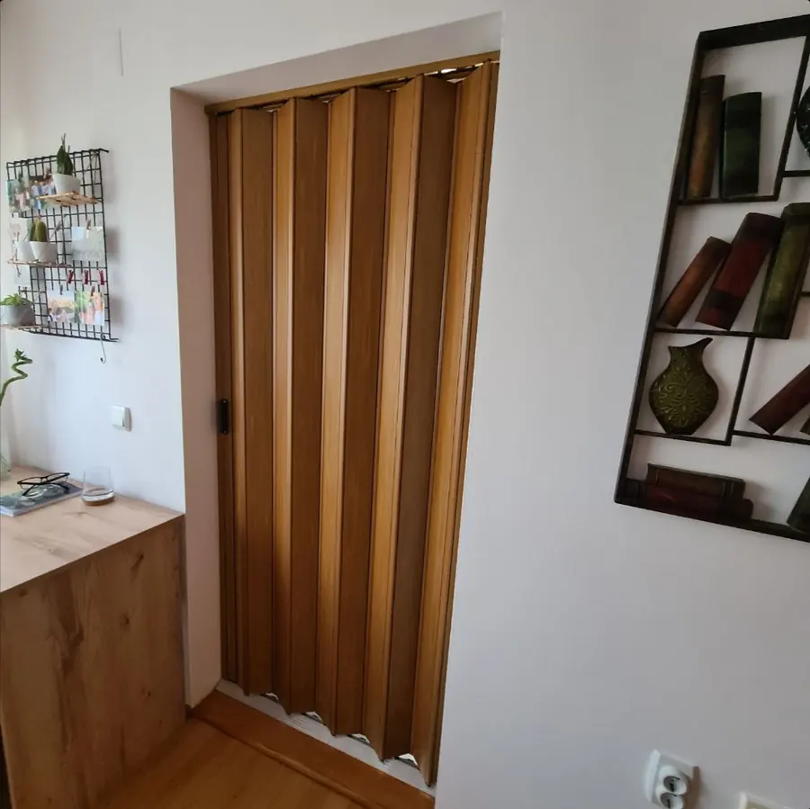
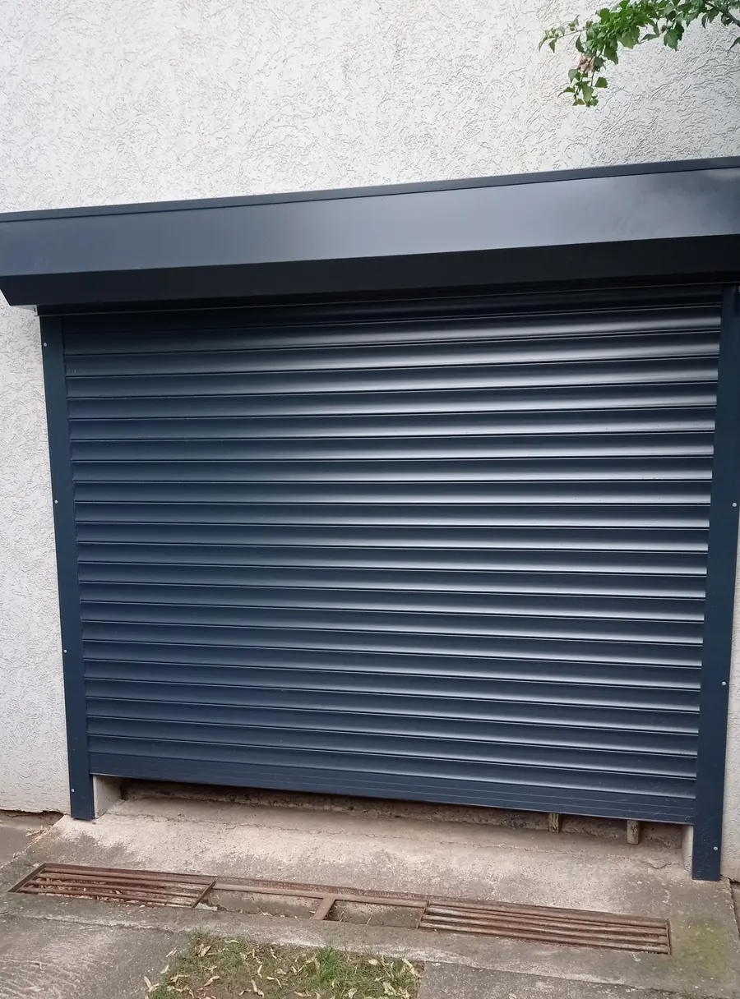

Cela teritorija Srbije
Sedište nam je u Nišu, ali izlazimo i montiramo širom Republike Srbije.

Niš · Zelengorska 10a · cela Srbija
Proizvodimo, ugrađujemo i servisiramo roletne, tende, zavese i komarnike — za kuće i stanove, ali i za restorane, kafiće i poslovne objekte. Kvalitetan materijal, precizna montaža i garancija na svaki izvršeni posao.
Sedište nam je u Nišu, ali izlazimo i montiramo širom Republike Srbije.
Za svaki posao koji uradimo stojimo iza svog rada — i posle montaže.
Radimo isključivo sa proverenim materijalima i komponentama.
Šta radimo
Od jednog komarnika na kuhinjskom prozoru do kompletne tende nad baštom restorana — isti pristup, ista preciznost.

Naša osnovna delatnost. Unutrašnje i spoljašnje roletne, fiksne i pokretne tende za terase i balkone, venecijaneri u svim širinama lamela. Merenje, izrada i ugradnja — sve na jednom mestu.
Više o proizvodimaUgradnja nove i servis postojeće opreme — zamena gurtni, lamela, motora i mehanizama.
Aluminijumske i drvene lamele za precizno doziranje svetlosti, bez gubitka pogleda.
Terasa i balkon upotrebljivi tokom cele godine — zaštita od vetra, kiše i prašine.
Fiksni, klizni, rolo i ram komarnici za sve tipove prozora i vrata.
Pregradna harmonika vrata za kupatila, ostave i uske prolaze — sklapaju se uza zid i ne oduzimaju prostor pri otvaranju.
Motorna i ručna rolo vrata za garaže i radionice — izolovane lamele, daljinski upravljač i sigurnosna blokada pri spuštanju.
Pošaljite meru ili sliku otvora — javljamo se sa predlogom i cenom, bez obaveze.
O nama
GAGI MONT je specijalizovan za proizvodnju, ugradnju i servisiranje roletni, tendi, zavesa i komarnika. Dugogodišnje iskustvo na terenu naučilo nas je da razliku ne pravi materijal sam po sebi, nego to koliko je pažljivo ugrađen. Zato svaki posao radimo isto — bez obzira da li je u pitanju jedan prozor ili cela zgrada.

Unutrašnje i spoljašnje, električne i manuelne. Pored zaštite od svetlosti, spoljne roletne donose i dodatnu izolaciju, zaštitu od buke i viši nivo sigurnosti objekta.
Saznajte više
Za terase, balkone, restorane i druge otvorene prostore. Fiksni i pokretni modeli štite od sunca i kiše, a prostoru daju i estetski karakter — bašta postaje produžetak enterijera.
Saznajte više
Široka paleta boja i materijala, od lakih tkanina do dekorativnih materijala: zebra zavese, rolo zavese i trakaste zavese za kontrolu svetlosti i privatnost.
Saznajte više
Fiksni, klizni, rolo i ram komarnici za vrata i prozore. Mreža se uklapa u boju stolarije, ne smeta pogledu i leto prolazi bez insekata u kući.
Saznajte više
Pregradna vrata koja se sklapaju uza zid umesto da se otvaraju u prostoriju. Rešenje za kupatila, ostave i uske prolaze, gde klasičnim vratima treba prostor za otvaranje. Dekor drveta ili bela, po meri otvora.
Pogledajte radove
Motorna i ručna, sa izolovanim lamelama, daljinskim upravljačem i sigurnosnom blokadom pri spuštanju. Namotavaju se u kasetu iznad otvora, pa ne oduzimaju prostor ni u garaži ni ispred nje.
Pogledajte radoveKompletna ponuda
Pored osnovnog programa, na terenu radimo i sledeće. Ako nešto ne vidite na spisku — pozovite, verovatno ipak radimo.
Naš rad
Fotografije sa naših montaža. Kliknite na sliku za uvećanje.
Za ovu uslugu još nema fotografija.
Recite nam koja fotografija vam se dopala — polazimo od nje i prilagođavamo vašem prostoru.

Zašto baš mi
Koristimo proverene profile, platna i mehanizme koji izdrže sunce, vetar i godine.
Sve u ravni, na meru i bez improvizacije — dobra montaža se ne primećuje, loša odmah.
Servisiramo i ono što nismo mi ugradili. Kvar na roletni ne mora da čeka sledeću sezonu.
Iza nas su godine rada na privatnim objektima, restoranima i poslovnim prostorima.
Dogovoren termin, uredno za sobom i garancija na sve što uradimo.
Pitanja
Ono što nas klijenti najčešće pitaju pre nego što se odluče. Ne nalazite odgovor — pozovite, odgovaramo direktno.
Cena zavisi od mere, materijala i tipa mehanizma (ručni ili motorni), pa je ne dajemo paušalno preko sajta. Pošaljite meru ili sliku otvora na WhatsApp ili Viber — odgovaramo sa okvirnom cenom istog dana.
Da — dolazak radi merenja i procena su bez obaveze. Naplaćuje se isključivo izrada i ugradnja.
Zavisi od trenutne zauzetosti i od toga da li je proizvod standardne ili posebne mere. Tačan rok dobijate odmah pri merenju, kada se dogovara i termin ugradnje.
Da, na sve izvršene usluge i ugrađene komponente. Radimo isključivo sa proverenim materijalima.
Da — sedište nam je u Nišu, ali redovno izlazimo na teren i u druge gradove širom Srbije. Pozovite da proverimo termin za vašu lokaciju.
Da. Zamena gurtne, lamela, motora i mehanizama — servisiramo i montažu drugih majstora, ne samo svoju.
Aluminijumske profile i mehanizme proverenih proizvođača, birane da izdrže sunce, vetar i godine svakodnevne upotrebe.
Da, radimo tokom cele godine. Motorne roletne i dodatna izolacija se najviše traže pred zimu, ali ugrađujemo u svim godišnjim dobima.
Imate drugačije pitanje? Pišite nam
Kontakt
Najbrže ćemo se dogovoriti telefonom. Ako vam više odgovara pisanim putem, napišite poruku i pošaljite je na WhatsApp ili Viber — javljamo se u najkraćem roku.
| Ponedeljak – Petak | 08–16h |
|---|---|
| Subota | 08–16h |
| Nedelja | Ne radimo |